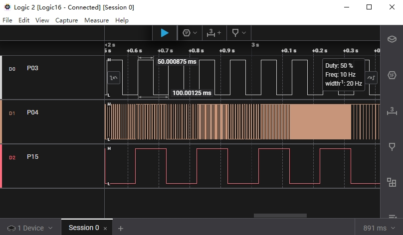
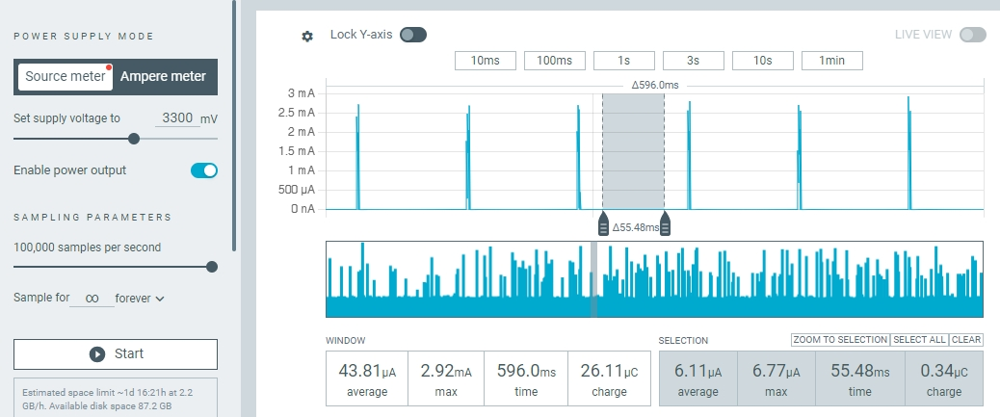

DeepSleep PWM Waveform Generator¶
1 功能概述¶
本例程演示如何使 SoC 在 DeepSleep 状态下输出 PWM 波形，并使用 APB HW Timer0 定时唤醒并修改 PWM 波形周期和占空比。
2 环境准备¶
硬件设备与线材：
PAN107X EVB 核心板与底板各一块
JLink 仿真器（用于烧录例程程序）
逻辑分析仪（Logic Analyzer, LA，用于观察 PWM 波形信息）
电流计（本文使用电流可视化测量设备 PPK2 [Nordic Power Profiler Kit II] 进行演示）
USB-TypeC 线一条（用于底板供电和查看串口打印 Log）
杜邦线数根或跳线帽数个（用于连接各个硬件设备）
硬件接线：
将 EVB 核心板插到底板上
为确保能够准确地测量 SoC 本身的功耗，排除底板外围电路的影响，请确认 EVB 底板上的：
Voltage 排针组中的 VCC 和 VDD 均接至 3V3
POWER 开关从 LDO 档位拨至 BAT 档位（并确认底板背部的电池座内没有纽扣电池）
使用 USB-TypeC 线，将 PC USB 插口与 EVB 底板 USB->UART 插口相连
使用杜邦线将 EVB 底板上的 TX 引脚接至核心板 P16，RX 引脚接至核心板 P17
使用杜邦线将 JLink 仿真器的：
SWD_CLK 引脚与 EVB 底板的 P00 排针相连
SWD_DAT 引脚与 EVB 底板的 P01 排针相连
SWD_GND 引脚与 EVB 底板的 GND 排针相连
将逻辑分析仪硬件的：
USB 接口连接至 PC USB 接口
三个通道的信号线分别连接至 EVB 底板的 P03 / P04 / P15 排针
GND 连接至 EVB 底板的 GND 排针
将 PPK2 硬件的：
USB DATA/POWER 接口连接至 PC USB 接口
VOUT 连接至 EVB 底板的 VBAT 排针
GND 连接至 EVB 底板的 GND 排针
PC 软件:
串口调试助手（UartAssist）或终端工具（SecureCRT），波特率 921600（用于接收串口打印 Log）
Logic（用于配合逻辑分析仪抓取 IO 波形）
nRF Connect Desktop（用于配合 PPK2 测量 SoC 电流）
3 编译和烧录¶
例程位置：<PAN10XX-NDK>\01_SDK\nimble\samples\low_power\deepsleep_pwm_waveform_generator\keil_107x
双击 Keil Project 文件打开工程进行编译烧录，烧录成功后断开 JLink 连线。
4 例程演示说明¶
PC 上打开 PPK2 Power Profiler 软件，供电电压选择 3300 mV，然后打开供电开关
从串口工具中看到如下的打印信息：
Try to load HW calibration data.. DONE. - Chip Info : 0x1 - Chip CP Version : 255 - Chip FT Version : 6 - Chip MAC Address : E1100000103A - Chip UID : 210001465454455354 - Chip Flash UID : 4250315A3538380B0065594356039B78 - Chip Flash Size : 512 KB [I] App started.. [I] Wait for Task Notifications.. [I] [Uptime: 180 ms] Timer0 ISR in, pwm_period = 0, pwm_pulse = 0. [I] [Uptime: 280 ms] Timer0 ISR in, pwm_period = 0, pwm_pulse = 0. [I] [Uptime: 380 ms] Timer0 ISR in, pwm_period = 0, pwm_pulse = 0. [I] [Uptime: 479 ms] Timer0 ISR in, pwm_period = 0, pwm_pulse = 0. [I] [Uptime: 579 ms] Timer0 ISR in, pwm_period = 0, pwm_pulse = 0. [I] [Uptime: 679 ms] Timer0 ISR in, pwm_period = 0, pwm_pulse = 0. [I] [Uptime: 778 ms] Timer0 ISR in, pwm_period = 0, pwm_pulse = 0. [I] [Uptime: 878 ms] Timer0 ISR in, pwm_period = 0, pwm_pulse = 0. [I] [Uptime: 977 ms] Timer0 ISR in, pwm_period = 0, pwm_pulse = 0. [I] [Uptime: 1077 ms] Timer0 ISR in, pwm_period = 172, pwm_pulse = 91. [I] [Uptime: 1177 ms] Timer0 ISR in, pwm_period = 158, pwm_pulse = 30. [I] [Uptime: 1276 ms] Timer0 ISR in, pwm_period = 43, pwm_pulse = 28. [I] [Uptime: 1376 ms] Timer0 ISR in, pwm_period = 276, pwm_pulse = 84. [I] [Uptime: 1476 ms] Timer0 ISR in, pwm_period = 14, pwm_pulse = 9. ...
观察逻辑分析仪波形，发现芯片 P03 引脚输出周期为 100ms，占空比为 50% 的波形；P04 引脚输出周期为0~10ms可变，占空比可变的波形； P15 引脚以 100ms 左右的间隔翻转：

使用逻辑分析仪抓取 PWM 输出波形¶
可见 PWM 波形输出是连续不间断的，说明低功耗期间 PWM 仍可以正常工作，期间 P15 引脚翻转说明 Timer0 定时时间到了触发芯片唤醒，并改变 P04 引脚的 PWM 波形参数。
将逻辑分析仪从芯片上断开（避免影响电流观测），再观察芯片电流波形：

使用电流计抓取电流波形¶
可见芯片低功耗底电流为 6uA 左右（比 GPIO 唤醒等其他模式的 4uA 底电流稍大一些，这是因为当前 DeepSleep 状态下内部 PWM 模块仍在工作），并且每隔 100ms 左右芯片从 DeepSleep 状态下唤醒。
5 开发者说明¶
5.1 SDK Config 配置¶
与本例程相关的 SDK Config (sdk_config.h) 配置有：
SoC Platform : Chip Power Mode
芯片供电选择 DCDC 模式，以降低芯片动态功耗
对应宏配置
CONFIG_SOC_DCDC_PAN1070 = 1
SoC Platform : 32K Low-Speed Clock Source
系统低速时钟选择内部 32K RC 时钟（RCL）
对应宏配置
CONFIG_LOW_SPEED_CLOCK_SRC = 0
SoC Platform : Force Calib RCL Clock
在系统初始化阶段强制校准一次 RCL 时钟，此操作会增加 50ms 左右的启动时间
对应宏配置
CONFIG_FORCE_CALIB_RCL_CLK = 1
Power Management : Enable Low Power Mode
使能系统低功耗功能
对应宏配置
CONFIG_PM = 1
Power Management : Enable Low Power Mode : Enable DeepSleep Mode2
使能系统低功耗 DeepSleep 模式 2，此模式下使用电压较高的低功耗 LDO（LPLDOH, 0.7v以上）给芯片所有外设模块供电，以确保低功耗下 PWM 输出 和 Timer 唤醒均正常
对应宏配置
CONFIG_DEEPSLEEP_MODE_2 = 1
Power Management : Enable Low Power Mode : Increase LPLDOH trim value
提高 LPLDOH 的电压，默认配置为 0，表示使用当前芯片默认的校准电压（0.7v），若发现低功耗下 PWM 输出和 Timer 唤醒功能不正常，则可以配置此选项以抬高 LPLDOH 的电压值
对应宏配置
CONFIG_SOC_INCREASE_LPLDOH_CALIB_CODE = 0
Log & Debug Config : Enable App Log
使能 App Log 功能
对应宏配置
APP_LOG_EN = 1
Log & Debug Config : Enable App Log : Log to UART
将 App Log 输出至串口
对应宏配置
CONFIG_UART_LOG_ENABLE = 1
5.2 程序代码¶
5.2.1 主程序¶
本例程中，OS 为使能状态，因此主程序 main() 函数也是 OS Main Task 的入口函数，其内容如下：
int main(void)
{
/* Application initialization */
app_setup();
/* Application main infinite loop */
app_main_loop();
return 0;
}
5.2.2 App Setup 初始化¶
App 初始化 app_setup() 函数内容如下：
void app_setup(void)
{
APP_LOG_INFO("App started..\n\n");
/* Initialize random seed for later pwm random duty use */
srand(2024);
/* Init GPIO P15 as indication IO */
GPIO_SetMode(P1, BIT5, GPIO_MODE_OUTPUT);
/* Init specific Timers for wake up use */
wakeup_timer_init();
/* Init specific PWM channels */
pwm_init();
}
初始化随机数种子，以供后续 Timer0 中断的修改 PWM 周期和占空比流程中使用
将 P15 初始化为推挽输出模式
在 wakeup_timer_init() 函数中初始化 HW APB Timer0
在 pwm_init() 函数中初始化 PWM Channel 2 和 Channel 3
5.2.3 App Main Task Loop 任务循环¶
App Main Task 循环 app_main_loop() 函数内容如下：
void app_main_loop(void)
{
uint32_t ulNotificationValue;
/* Store the handle of current task. */
xTaskToNotify = xTaskGetCurrentTaskHandle();
if(xTaskToNotify == NULL) {
app_assert("Error, get current task handle failed!\n");
}
while (1) {
APP_LOG_INFO("Wait for Task Notifications..\n");
/*
* Here we try to take the task notify to let OS fall into idle task and
* enter SoC DeepSleep mode. We'll never wakeup this task by giving notify.
*/
ulNotificationValue = ulTaskNotifyTake(pdTRUE, portMAX_DELAY);
APP_LOG_INFO("A notification received, value: %d.\n\n", ulNotificationValue);
}
}
获取当前任务的 Task Handle，用于后续中断中给次任务发送通知使用
在 while (1) 主循环中尝试获取任务通知（Task Notify），并打印相关的状态信息
5.2.4 Timer0 初始化程序¶
Timer0 初始化程序 wakeup_timer_init() 函数内容如下：
static void wakeup_timer_init(void)
{
/* Configure HW APB Timer0 with interrupt and wakeup enabled */
/*
* Configure timeout
* timeout = TIMER_CMP_VAL * (TIMER_PRESCALE + 1) / SYS_CLOCK_32K
* = 32000 / 10 * (0 + 1) / 32000 (s)
* = 0.1 s = 100 ms
*/
const uint32_t TIMER_PRESCALE = 0;
const uint32_t TIMER_CMP_VAL = soc_32k_clock_freq_get() / 10;
/* Enable HW Timer0 Module clock */
CLK_APB1PeriphClockCmd(CLK_APB1Periph_TMR0, ENABLE);
/* Set Timer to periodic mode */
TIMER_SetCountingMode(TIMER0, TIMER_PERIODIC_MODE);
/* Enable Timer interrupt */
TIMER_EnableInt(TIMER0);
/* Enable Timer wakeup */
TIMER_EnableWakeup(TIMER0);
/* Enable Timer0 interrupt flag0 and wakeup flag0 signal */
TIMER0->CTL |= BIT8 | BIT11;
/* Enable NVIC IRQ for Timer */
NVIC_EnableIRQ(TMR0_IRQn);
/* Set timeout value */
TIMER_SetPrescaleValue(TIMER0, TIMER_PRESCALE);
TIMER_SetCmpValue(TIMER0, TMR0_COMPARATOR_SEL_CMP, (int32_t)TIMER_CMP_VAL + TIMER0_CMPDAT_DEVIATION);
/*
* Select Timer counting clock source to low-speed 32K clock
* NOTE: It's better to keep this as the last step before TIMER_Start() to
* avoid possible early spurious triggering of Timer1/2 IRQ. (Task#2701)
*/
CLK_SetTmrClkSrc(TIMER0, CLK_APB1_TMR0SEL_RCL32K);
/* Start Timer */
TIMER_Start(TIMER0);
}
此函数目的是将 Timer0 模块配置为每隔 100ms 唤醒系统并产生中断
由公式
timeout = TIMER_CMP_VAL * (TIMER_PRESCALE + 1) / SYS_CLOCK_32K，可知一个比较简单的配置方法是将 TIMER_CMP_VAL 配置为 3200，TIMER_PRESCALE 配置为 1配置并使能 Timer0 的流程包括：
使能 APB1 上的 Timer0 时钟
将 Timer0 配置为周期模式
使能 Timer0 的中断功能
使能 Timer0 的唤醒功能
使能 Timer0 的计数器 0 的中断和唤醒控制位
使能 Timer0 的 NVIC IRQ
配置 Timer0 的 Prescaler 预分频
配置 Timer0 的 Compare Value
配置 Timer 计数时钟为 32K Clock（需确保此步骤是启动 Timer 计数前的最后一步）
启动 Timer0 计数
5.2.5 Timer0 中断服务程序¶
Timer0 的中断服务程序如下：
CONFIG_RAM_CODE void TMR0_IRQHandlerOverlay(void)
{
static uint32_t cnt;
uint32_t pwm_pulse = 0;
uint32_t pwm_period = 0;
/* Handle timer interrupt event */
if (TIMER_GetIntFlag(TIMER0)) {
/* Clear timer int flags */
TIMER_ClearTFFlag(TIMER0, TIMER_GetTFFlag(TIMER0));
TIMER_ClearIntFlag(TIMER0);
/* Randomize PWM CH3 duty cycle after 10 times this handler execute */
if (++cnt > 9) {
pwm_period = rand() % 319 + 1;
pwm_pulse = rand() % pwm_period;
/*
* PWM Channel 3:
* - Period = (<0~319> + 1) cycles = <1~320> * 1 / 32000 s = (0~10) ms
* - Pulse = (<0~319> + 1) cycles = (0~10) ms
*/
PWM_SetPeriodAndDuty(PWM, PWM_CH3, pwm_period, pwm_pulse);
}
/* Toggle GPIO to indicate timer is timeout */
GPIO_Toggle(P1, BIT5);
/* Print system uptime to UART */
APP_LOG_INFO("[Uptime: %d ms] Timer0 ISR in, pwm_period = %d, pwm_pulse = %d.\n",
soc_lptmr_uptime_get_ms(), pwm_period, pwm_pulse);
}
/* Clear wakeup flag if there is. */
TIMER_ClearWakeupFlag(TIMER0, TIMER_GetWakeupFlag(TIMER0));
}
在函数名称前面加上
CONFIG_RAM_CODE以将此函数编译成 RAM Code（需确保sdk_config.h中的 SoC Platform : Enable RAM Function 配置为使能状态）由于工程默认会编译 HAL Timer Driver，而此处我们使用了 Timer 底层 Driver，并需重新实现中断处理函数，因此这里我们需要定义名为
TMR0_IRQHandlerOverlay()的中断处理函数，以覆盖 HAL Timer Driver 中实现的同名 weak 函数使用 TIMER_GetIntFlag() 接口检查 Timer0 中断 Flag 是否置位，若是则：
清除 Timeout Flag
清除 中断 Flag
满足一定条件后重新随机配置 PWM Channel 3 波形的周期和占空比
翻转 GPIO P15，并向串口打印当前时间戳和 PWM 参数信息
使用 TIMER_ClearWakeupFlag() 接口清除 Timer0 唤醒 Flag
5.2.6 PWM 初始化程序¶
PWM 初始化程序 pwm_init() 函数内容如下：
static void pwm_init(void)
{
/* Configure HW PWM module which can output waveform even in SoC DeepSleep mode */
/*
* Configure PWM waveform period and duty:
* PWM CH2 (PWM clock source is divided by PWM CLKDIV and CLKPSC):
* - pwm_cnt_freq = PAN_RCC_CLOCK_FREQUENCY_SLOW / (PWM_CH23_CLKPSC + 1) / PWM_CH2_CLKDIV
* = 32000 / (3 + 1) / 2 (Hz)
* = 4000 Hz
* - period = 1 / pwm_cnt_freq * (PWM_CH2_PERIOD_CNT + 1)
* = 1 / 4000 * (399 + 1) (s)
* = 100 ms
* - pulse = 1 / pwm_cnt_freq * (PWM_CH2_PULSE_CNT + 1)
* = 1 / 4000 * (199 + 1) (s)
* = 50 ms
* PWM CH3 (PWM clock source is configured as directly from 32K Clock):
* - pwm_cnt_freq = PAN_RCC_CLOCK_FREQUENCY_SLOW
* = 32000 Hz
* - period = 1 / pwm_cnt_freq * (PWM_CH3_PERIOD_CNT + 1)
* = 1 / 32000 * (15999 + 1) (s)
* = 500 ms
* - pulse = 1 / pwm_cnt_freq * (PWM_CH3_PULSE_CNT + 1)
* = 1 / 32000 * (3199 + 1) (s)
* = 100 ms
*/
const uint32_t PWM_CH23_CLKPSC = 3;
const PWM_ClkDivDef PWM_CH2_CLKDIV = PWM_CLK_DIV_2;
const uint32_t PWM_CH2_PERIOD_CNT = 399;
const uint32_t PWM_CH2_PULSE_CNT = 199;
const PWM_ClkDivDef PWM_CH3_CLKDIV = PWM_CLK_DIRECT;
const uint32_t PWM_CH3_PERIOD_CNT = 15999;
const uint32_t PWM_CH3_PULSE_CNT = 3199;
/* Set PWM channel 2/3 counting clock source to 32K clock */
CLK_SetPwmClkSrc(PWM_CH2, CLK_APB1_PWM_CH23_SEL_CLK32K);
/* Enable clock of PWM and related channel */
CLK_APB1PeriphClockCmd(CLK_APB1Periph_PWM0_EN | CLK_APB1Periph_PWM0_CH23, ENABLE);
/* Enable Pinmux of target PWM channel */
SYS_SET_MFP(P0, 3, PWM_CH2);
SYS_SET_MFP(P0, 4, PWM_CH3);
/*
* Set clock prescaler (clk_psc) of PWM Channel 2/3.
* NOTE that the channel 2 and 3 share the same prescaler.
*/
PWM_SetPrescaler(PWM, PWM_CH2, PWM_CH23_CLKPSC);
/* Set clock divider (clk_div) of PWM channel 2/3 */
PWM_SetDivider(PWM, PWM_CH2, PWM_CH2_CLKDIV);
PWM_SetDivider(PWM, PWM_CH3, PWM_CH3_CLKDIV);
/* Init PWM channel 2/3 with different period and pulse cycles */
PWM_SetPeriodAndDuty(PWM, PWM_CH2, PWM_CH2_PERIOD_CNT, PWM_CH2_PULSE_CNT);
PWM_SetPeriodAndDuty(PWM, PWM_CH3, PWM_CH3_PERIOD_CNT, PWM_CH3_PULSE_CNT);
/* Invert output level of PWM channel 3 */
PWM_EnableOutputInverter(PWM, BIT(PWM_CH3));
/* Enable Output of PWM channel 2/3 */
PWM_EnableOutput(PWM, BIT(PWM_CH2));
PWM_EnableOutput(PWM, BIT(PWM_CH3));
/* Start PWM internal counter */
PWM_StartChannel(PWM, PWM_CH2);
PWM_StartChannel(PWM, PWM_CH3);
}
此函数功能是：
将 PWM Channel 2 输出周期 100ms，占空比 50% 的波形
将 PWM Channel 3 初始输出周期 500ms，占空比 20% 的波形（后续会在 Timer0 中断中修改）
PWM 配置也有 Prescaler 和 Clock Divisor 的概念，它们共同决定了 1 个 PWM Count 的时间，具体公式计算请参考代码注释
配置并使能 PWM 的流程包括：
配置 PWM 计数时钟为 32K Clock
使能 APB1 上的 PWM 时钟 和 PWM Channel 2 / Channel 3 时钟
配置 Pinmux 引脚，将 P03 配置为 PWM Channel 2 功能，P04 配置为 PWM Channel 3 功能
配置 PWM Channel 2 和 Channel 3 的 Prescaler 预分频参数（两个通道共用一个参数）
配置 PWM Channel 2 和 Channel 3 的 Clock Dividor 分频系数（各个通道可单独配置）
配置 PWM Channel 2 和 Channel 3 的周期和占空比
反相 PWM Channel 3 输出波形
使能 PWM Channel 2 和 Channel 3 的输出功能
启动 PWM Channel 2 和 Channel 3
5.2.7 与低功耗相关的 Hook 函数¶
本例程还用到了 2 个与低功耗密切相关的 Hook 函数：
CONFIG_RAM_CODE void vSocDeepSleepEnterHook(void)
{
#if CONFIG_UART_LOG_ENABLE
reset_uart_io();
#endif
}
CONFIG_RAM_CODE void vSocDeepSleepExitHook(void)
{
#if CONFIG_UART_LOG_ENABLE
set_uart_io();
#endif
}
上述两个 Hook 函数用于在进入 DeepSleep 前和从 DeepSleep 唤醒后做一些额外操作，如关闭和重新配置 IO 为串口功能，以防止 DeepSleep 状态下 IO 漏电
详细解释请参考 DeepSleep GPIO Key Wakeup 例程中的相关介绍